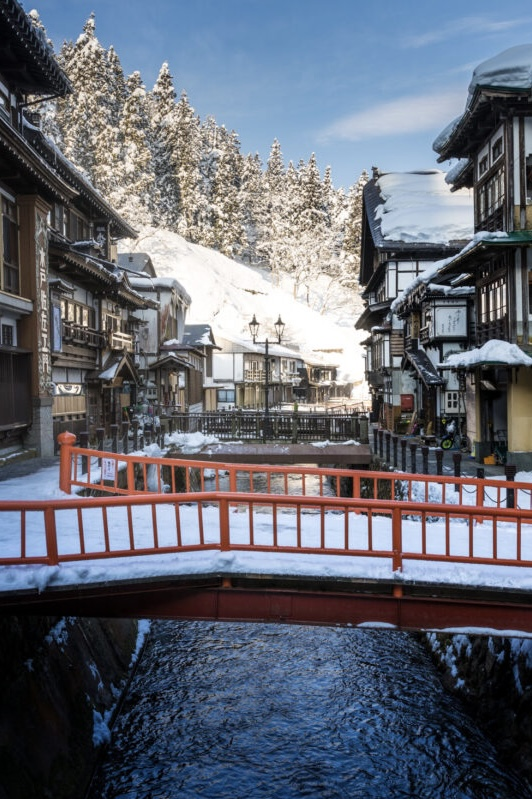
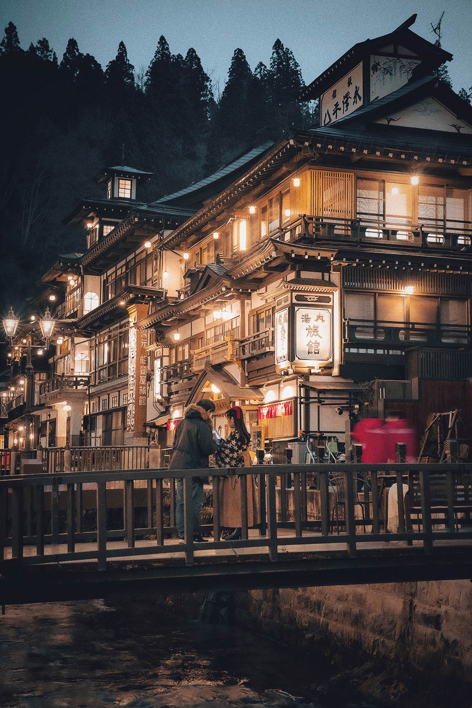
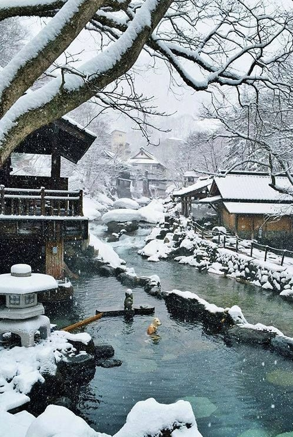
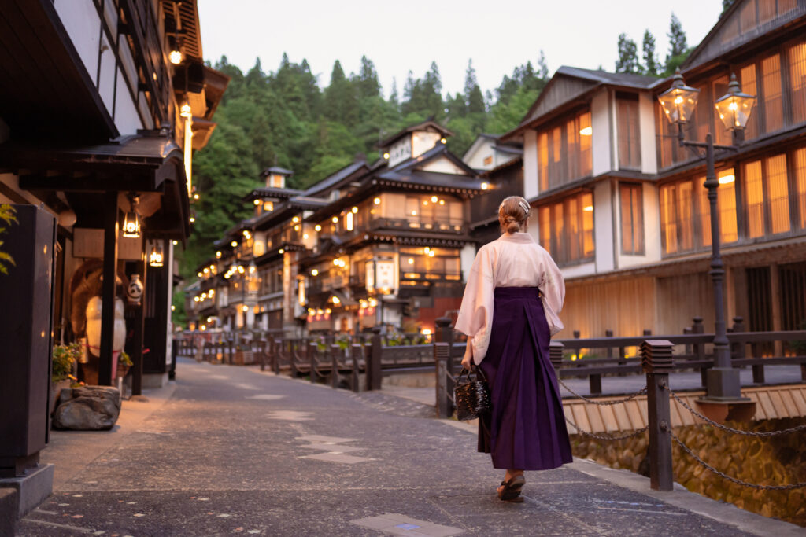

Ginzan onsen has a rich history, originally developed around a silver mine. Today, it still remains its historic buildings and ryokans from its mining past lined up along the Ginzan river. The setting of the hot spring resorts, traditional bridge crossings and wooden buildings illuminated by lanterns during the evening, resembles a scene from a Studio Ghibli movie, “Spirited away” by Hayao Miyazaki. Ginzan onsen is especially beautiful during winter as the scenery will be covered in snow.
Updates: 2023-10-11 Views: 33.2k
Enclosed by the Sea of Japan to the west and mountains to the east, Yamagata Prefecture is defined by its nature. Along the coast sit the port cities of Tsuruoka and Sakata, while deep inland is Zao Onsen, an area home to hot springs, sparsely visited ski slopes, and spectacular snow-covered evergreens.



The area originally developed around a silver mine; however, these days it is better known as one of Japan's prettiest onsen towns with historic ryokan lined up along the river. Yamagata is a fantastic cultural destination to discover some of Tohoku's varied treasures, and here we explore some of its cultural highlights, from one of the top Kumano shrines in Japan to perhaps its most well-known hot spring town.
